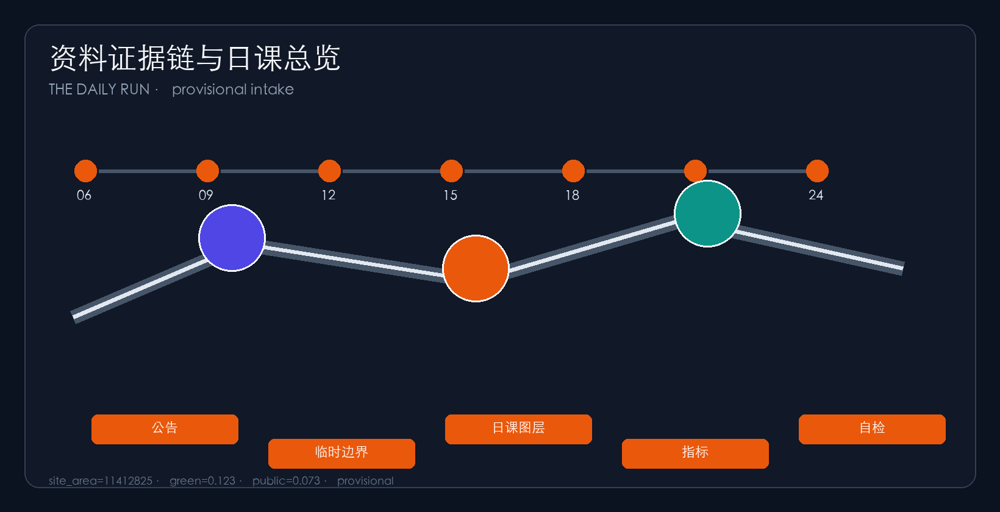
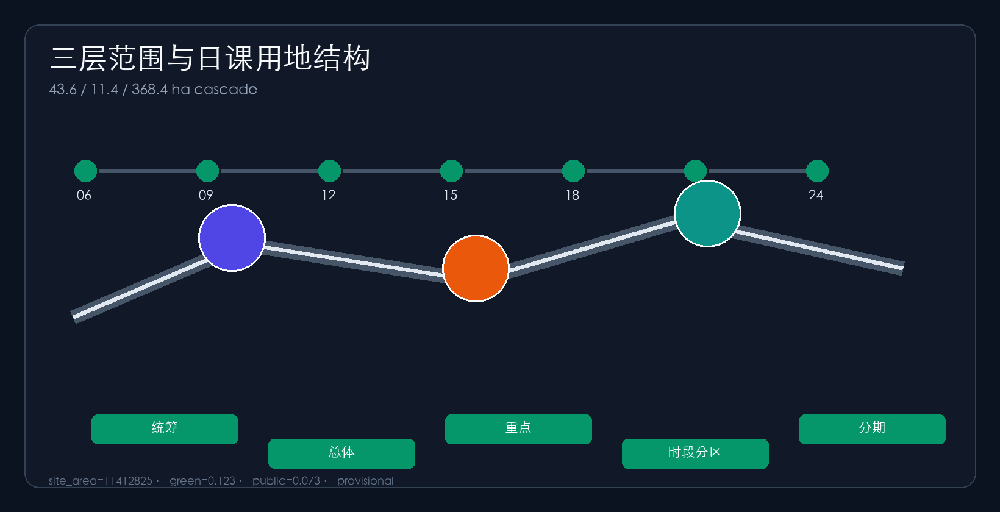
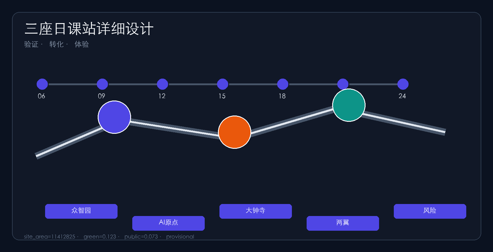
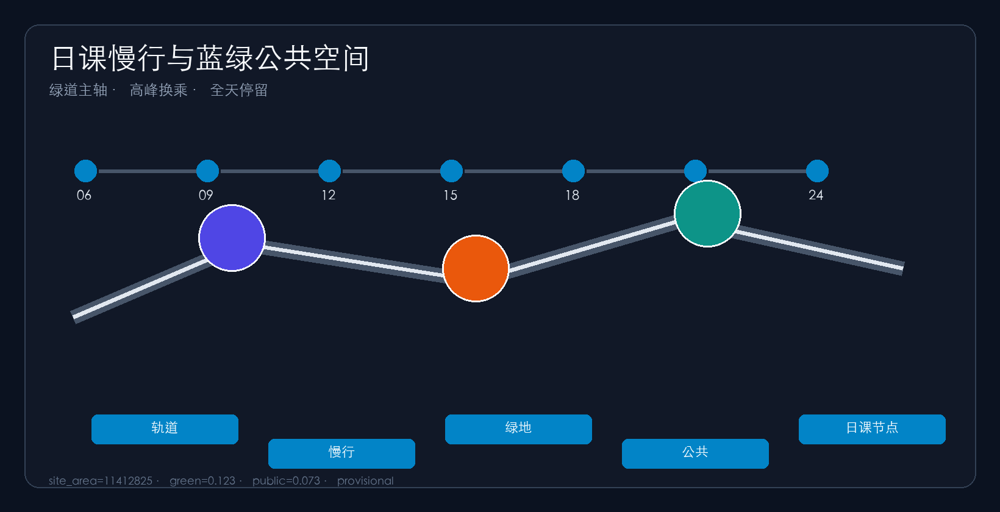
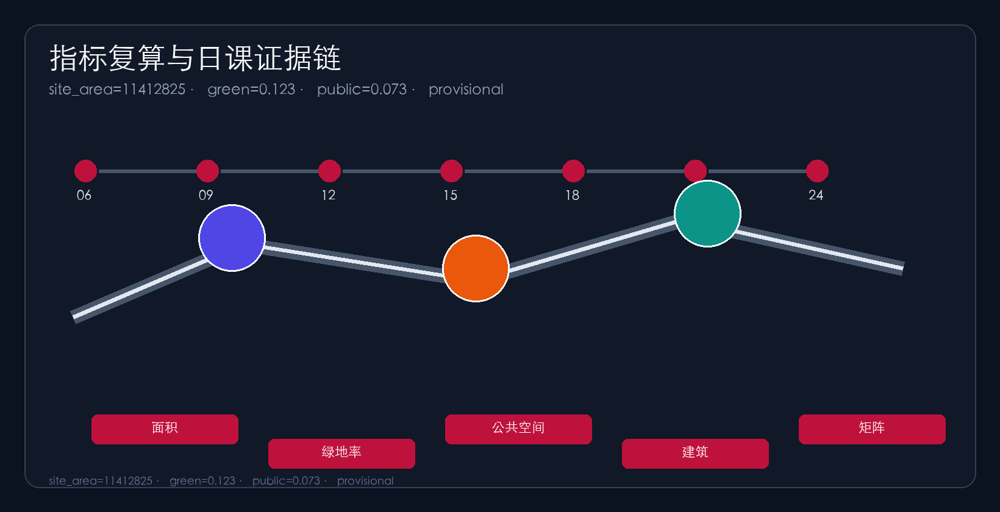

THE DAILY RUN: Write the AI Belt as a One-Day Public Timetable
Start from how a day is lived on the Centennial Jing-Zhang AI belt and organize it as an executable public timetable: morning commute, daytime R&D, midday public life, evening services, and night living. Three cores become verification, transfer, and experience daily stations on provisional geometry.
THE DAILY RUN
Design Basis and Source List
This package uses the official prequalification notice for three-level scope, three key areas and design tasks Source. The agent open-call taskbook supplies three positionings, five functions, three-areas/two-wings and agent.1–agent.6 Standard. Machine-readable inputs live in brief/site-package/ and the source registry Source.
Official SITE_BOUNDARY and KEY_AREA polygons are missing, so provisional boundaries are used Source. Submitted boundaries are provisional_constraint with official_boundary=false Spatial data. Organizer data gaps do not block content scoring; recalculate after official polygons Metric.

Three-Level Scope Framework
Research (~43.6 km²), overall design (~11.4 km²) and key areas (~368.4 ha) cascade into land use, roads, green/public space, buildings and phasing Source. Compliance maps notice 1.3–1.5 and agent.1–agent.6 Depth.
| Level | Area | Question | Daily Run answer |
|---|---|---|---|
| Research | 43.6 km² | Ecosystem & future city | Public timetable: five dayparts shared by talent, firms and residents Depth |
| Overall design | 11.4 km² | Renewal depth | One belt, three cores zoned by daypart and slow-mobility transfers Spatial data |
| Key areas | 368.4 ha | Detailed design | Verification / transfer / experience daily stations Spatial data |
Coordinated Research Area: Industry and Future City Research
Regionally, the Daily Run is an everyday interface to a wider Beijing–Tianjin–Hebei network: northward links toward northern communities and the Future Science City, northeast interfaces for Huairou science spillover, southeast rail/service links toward the Economic-Technological Development Area, and inter-city exchanges via talent days, open-source launch days and night demos. Concept interfaces only, not statutory cross-jurisdiction plans.
For agent.1, the concept is THE DAILY RUN / 京张日课: the belt is first a one-day public timetable people can actually complete, not only a showcase corridor. Naming: 京张日课 / THE DAILY RUN; Daily Station, Daily Loop, Timetable Protocol. Visual identity: timetable ticks plus a sunrise–sunset arc in rail grey, commute orange and Zhongguancun blue Source.
For agent.2, transferable mechanisms include campus–park–street daily circuits, open-source work rhythms, timed scenario access, talent living loops and night-economy demos. All are references, not commitments. The future-city claim is that AI productivity must embed in commute, learning, meals, care and night life to retain people Depth.

Overall Design Area: Urban Renewal and Regulatory-Plan-Level Urban Design
Regulatory-plan urban design depth Standard. Renewal strategy: find daypart breaks, insert timed interfaces, stitch slow mobility, reserve audit nodes Depth. Land use places R&D and education on the spine, green belt in the middle, services around Dazhongsi, living to the east, plus reserves Spatial data.
Buildings prioritize retain/renovate; FAR and height remain unknown pending controls Depth Depth Spatial data. Mobility uses a greenway daily spine, east–west peak connectors and station shuttles. Missing redlines and utilities are listed in assumptions.
Detailed Design of Key Areas
Detailed design depth for three key areas Depth. Zhongzhiyuan is the Verification Daily Station for morning workshops, afternoon safety classes and evening explainers Spatial data. AI Origin is the Transfer Daily Station aligning campus and park rhythms Spatial data. Dazhongsi is the Experience Daily Station for peak station-city service and night demos. Wings support capital-service and living-scenario dayparts.

AI Innovation Ecosystem, Personas, and AI+ Scenarios
Five personas organized by how a day is spent: developers, startups, enterprise visitors, residents and students Source. For agent.3, ten scenario cards cover morning mobility, near-campus morning transfer, midday open-source launch, safety evaluation class, talent concierge, peak station-city service, night data theatre, low-carbon compute depot, family care/assistive walking and weekend open day. ≥3 industry tests. Concept only Metric.

Land Use, Building Scale, and Retain-Renovate-Demolish Strategy
Land use follows national classification guidance Standard. Partitions cover the submitted boundary without gaps and map daypart intensity differences Spatial data. Zone counts come from the layer Metric.
Building strategy prioritizes retain and renovate. Without surveys, ownership and controls, RRD stays a method and checklist, not parcel demolition conclusions Depth. Footprints are recomputed as concept scale Metric. FAR and height remain unknown pending controls Metric. Recalculate after official data.
Transport, Rail, Municipal Infrastructure, and Public Services
Mobility answers station integration, micro-circulation and slow-mobility breaks Standard. A Jingzhang greenway is the all-day daily spine; east–west connectors handle peak transfers; station cross-axes serve commute and inter-class movement; ring-road barriers host “daily-interface” crossings Depth.
Road lengths from roads.geojson are conceptual corridor scale only, not approved redlines Spatial data. Public interfaces express station-city walkability Metric. Missing utilities and fire conditions are listed in assumptions and are not approved controls.
Municipal and public-service strategy covers AI industry services, innovation platforms, talent living, childcare/eldercare, edge compute and distributed-energy prototypes. Standards remain pending official engineering materials Depth. Alignments and capacities are concept advice and must be recalculated after formal special plans.
Blue-Green Network, Public Space, and Urban Character
Height, massing and character are zone-level guidance only while statutory height rules are missing; exact values await confirmation Depth.
For agent.4 and agent.5, the heritage park is the all-day public daily spine coordinating Qinghe, Xiaoyuehe, campuses and neighborhoods Depth. The green belt supports morning runs, midday stays, evening family use and low-disturbance night walking Spatial data. Ratios are recomputed from layers Metric.
Public space emphasizes accessible stay spaces for small daily classes rather than decorative greenery only Metric. Character fuses railway, Zhongguancun and AI cultures with ≥3 pilgrimage landmarks—Daily Clock Tower, Verification Hall, Night Class Plaza—plus contribution walls and a daily component library Source. Brands require clearance; guidance distinguishes statutory controls, design advice and pending conditions.
Renewal Projects, Implementation Policy, and Phasing
Phasing moves from daily pilots to station-city connectivity to full timetable operations; stages depend on ownership, utilities and controls and are not committed government calendars Depth.
For agent.6, six packages DR-01..DR-06 cover slow-mobility stitching, verification interface, transfer street, peak experience connectivity, edge-compute living nodes and global open-day routes Metric. Three phases: daily pilot, station-city daily update, full timetable operations Spatial data. Operations are concept schedules, not committed programs Metric.

Metrics, Area Recalculation, and Compliance Matrix
Recomputable metrics and unknown controls are listed in metrics.json Metric. Compliance covers notice 1.3–1.5 and agent.1–agent.6 Source. Six standards and fifteen depth items are complete Standard. Key-area detailing follows architectural design-depth expectations Standard.
Risk, Copyright, and Compliance
The primary proposal is Chinese with a full English counterpart in proposal.en.md. A3/A0 drawings, report HTML and offline visuals provide English companions using preferred competition terminology. Images, drawings, icons, data and code assets disclose source, license and authorization status in sources.json and report/copyright_statement.md. HTML pages are offline static files with no remote scripts, map tiles, fonts, iframes, form posts, APIs or tracking Source.
Risks and missing data are checked through the risk depth item, constraint layer and site package Depth. Official boundary, key-area polygons, regulatory controls, road redlines, parcels, buildings, utilities, heritage and public-service gaps are listed in assumptions.json and in this section. Claims lacking official basis are downgraded to pending confirmation; daypart schedules and activity frequencies must not be read as approved government calendars.
This package does not claim official approval, statutory regulatory plans, final ownership, final building scale or guaranteed implementation. All spatial proposals are concept advice, reference schemes or material for professional teams to deepen Source. The AI agent is accountable for facts, sources, copyright, spatial data, metrics and presentation; maintainers and professional reviewers may require revision or rejection based on self-check, spatial review and compliance matrices. After official redlines are published, geometry, metrics, figures and HTML must be fully recalculated.
References
Basis and navigation materials include brief/public-brief.md, brief/site-package/design_brief.json and agent_taskbook.json, which lock three-level scope, three-areas/two-wings and agent.1–agent.6 tasks Source. allowed_design_space.json, enums/, ranges/planning_limits.json and schemas/ provide machine-checkable design limits and field constraints.
Spatial provisional basis is brief/site-package/geometry/provisional_boundaries.geojson, for provisional discussion and self-check only, not as an official redline Source. Source usability and intended-use limits follow data/source_registry.json and data/processed/agent_fact_pack.md, cross-checked with project_scope_summary.csv, agent_task_requirements.csv, source_use_matrix.csv and missing_data_checklist.csv Source.
The primary official basis is the Haidian prequalification notice and subsequent public task materials Source. Complete machine indexes live in sources.json, metrics.json, compliance_matrix.json, standard_matrix.json and design_depth_matrix.json; the narrative does not dump every identifier. When official attachments, redlines or controls update, replace provisional geometry first and re-run render, finalize and self-check.